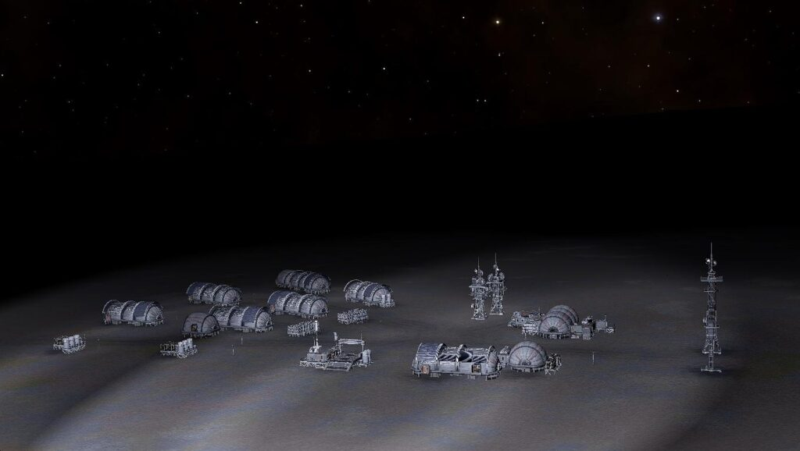

Quarantine Site UC-001 is an abandoned settlement in the HIP 86908 system on body 3 a, at -23.5514, -38.8450 (in Live/4.0) or at 19.0028, -38.8999 (in Legacy/3.8).
This site was found on the 5th June 3308 by Commander Imonix who contacted Canonn to report his discovery.
The location of this site can be found by following the three nearby listening posts located in:
Col 285 Sector NO-Q d5-59 / Col 359 Sector QC-B c1-11 / Col 359 Sector QI-Z c1-11
LISTENING POST SIGNAL LOG
[Note for 3.8] Codex displays values for 4.0, it should read: long:-38.899914
…Encoded Message DGE-964-A Detected
Matches signal detected at listening posts: (col 359 sector qc-b c1-11, col 359 sector qi-z c1-11)
Approximate Signal Range: 31-34 LY
…looks like initial fears were justified…. long:-38.8450 ….measures were all in place…..no survivors…
….Signal Lost….
LISTENING POST SIGNAL LOG
[Note for 3.8] Codex displays values for 4.0, it should read: lat:19.002846
…Encoded Message DGE-964-B Detected
Matches signal detected at listening posts: (col 285 sector no-q d5-59, col 359 sector qi-z c1-11)
Approximate Signal Range: 44-46 LY
…looks like initial fears were justified… lat:23.5514. …measures were all in place…no survivors…
…Signal Corrupted…
LISTENING POST SIGNAL LOG
…Encoded Message DGE-964-C Detected
Matches signal detected at listening posts: (col 285 sector no-q d5-59, col 359 sector qc-b c1-11)
Approximate Signal Range: 60-62 LY
…looks like initial fears were justified…. 3a …measures were all in place…no survivors…
…Carrier Signal Lost…
It should be noted that the listening post at Col 359 Sector QI-Z c1-11 appears to be in the wrong location for trilateration, and the settlement was actually found using the first two listening posts alone. Based on the distances provided from the 3rd listening post log, the estimated system for the 3rd listening post would have been Col 285 Sector KP-D c13-12.

There are no Engineer Materials at the site, but not far from the entrance of the settlement there is a Public Data Point which may be scanned for Engineer Data.
Around the settlement there are five Settlement Comms Log Uplink points, scanning four of them will give some background to the reason for its abandonment, however the fifth uplink does not contain any logs:
QUARANTINE 1/4
Exploration Team Alpha Situation Report:
Command, it looks like initial fears were justified. I knew it was too good to be true that there was a settlement all the way out here. Quarantine measures were all in place when we arrived, but there are no survivors.
QUARANTINE 2/4
Exploration Team Alpha Situation Report:
It looks like this place was a pioneer deep space colony, must have been here for centuries.
According to the logs, some kind of unknown contaminant was released into the O2 system. They were all exposed in a matter of minutes.
We’ve found what’s left of the bodies, the quarantine systems kept them pretty juicy. It looks like they dissolved from the inside. Not a good way to go. According to the doctor there is no chance the contaminant could still be active.
I’ve got one of my men making an analysis now.
QUARANTINE 3/4
Team Alpha Medical Officers Report:
The bodies are in an amazing state of preservation considering how long they have been out here. The quarantine system seems to have kept them “fresh” for want of a better term.
Initial analysis of the subject UC_001 has shown an interesting level of activity in the remaining tissue.
It seems the contaminant works at a very slow rate once the host is deceased, enabling it to last long past the death of…
I need to double check the data, this can’t be correct.
QUARANTINE 3/4
[Note: This log is incorrectly labelled as 3/4, it should be 4/4.]
Exploration team Alpha Emergency Broadcast:
Mission Code Red. I repeat Mission Code Red.
This site is still contaminated.
It’s an organism… the contaminant. It’s killed Miller, Jackson, Lee, Bailey. I’ve also been exposed, don’t know how long I’ve got. Reinitiating quarantine measures to seal the settlement.
Do not send rescue. Classify as no go.